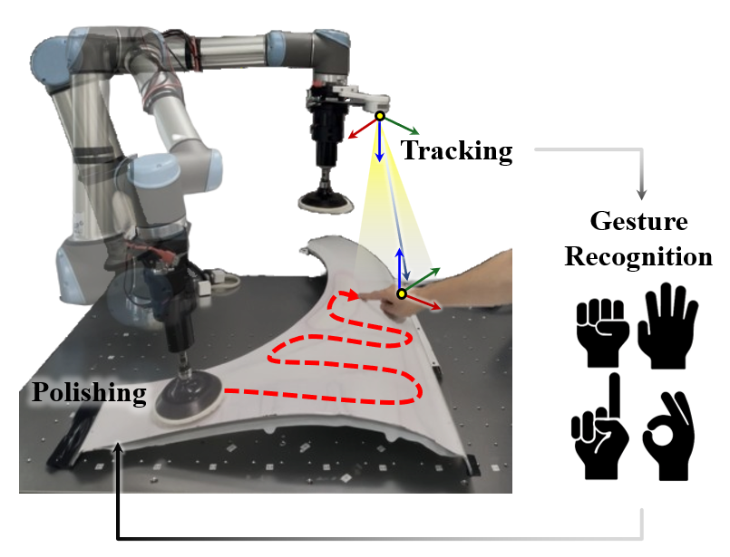
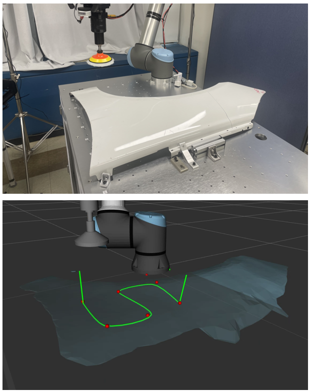
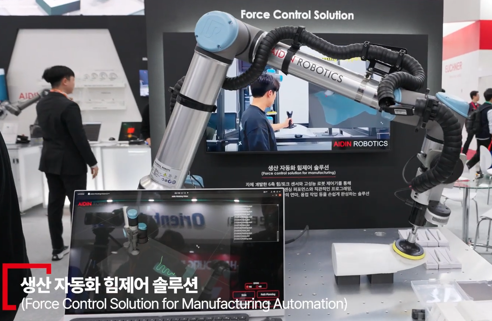

Hand-Gesture Based Robot Tracking and Teaching Framework:
Demonstration in Surface Polishing Task
Eui-Chan Kim, Jaeyoon Shim, Eunseop Song, Seung Yeon Lee, Jae Yoon Sim, *Hyouk
Ryeol Choi
Under review – IEEE Robotics and Automation Letters (RA-L)
video
This work presents a hand-gesture based robot teaching framework that enables intuitive, no-code
programming for industrial tasks.
By combining robust hand tracking, fingertip depth filtering, and gesture-driven state machines
with eye-in-hand RGB-D visual servoing,
the system improves teaching accuracy and usability in surface finishing applications such as
polishing.

Tool Path Planning Using Geodesic Hermite Spline for Accurate Robotic
Finishing on 3D Mesh
Eui-Chan Kim, Jae Yoon Shim, Yonoo Kim, Seung Yeon Lee, Jae Yoon Sim, *Hyouk Ryeol
Choi
KRoC 2025 – Poster Presentation
paper
This work introduces a Geodesic Hermite Spline-based tool path planning method for robotic
finishing on 3D mesh surfaces.
By generating curves directly on the surface and applying barycentric normal vector smoothing,
the method achieves smoother trajectories and stable normal transitions, improving accuracy and
robustness for complex geometries.
|

Exhibitions with Aidin Robotics
Robot World 2024 (Nov 2024) & Smart Factory Automation World 2025 (Mar 2025)
Participated in major robotics and automation exhibitions in collaboration with
Aidin Robotics, showcasing
an integrated Surface Polishing Solution pipeline:
- 3D Scan & Reconstruction
- Tool Path Planning
- Simulation
- Force-Controlled Polishing
video (Robot World 2024)
video (Smart Factory 2025)
Template adapted from open-source sites and
inspired by Jon Barron.
|
|
{kind=link}